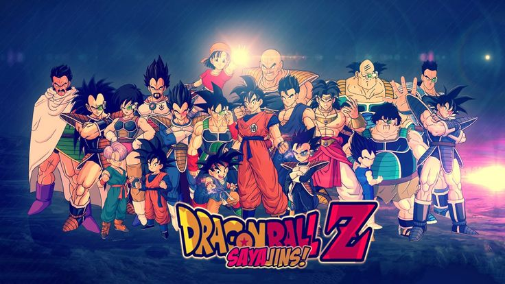

Design com CSS

Dragon Ball Z( DBZ ) é uma série de televisão de anime japonesa produzida pela Toei Animation . Parte da franquia de mídia Dragon Ball , é a sequência da série de televisão Dragon Ball de 1986 e adapta os últimos 325 capítulos da série de mangá Dragon Ball original criada por Akira Toriyama . A série foi ao ar no Japão pela Fuji TV de abril de 1989 a janeiro de 1996 e mais tarde foi dublada para transmissão em pelo menos 81 países em todo o mundo Dragon Ball Z continua as aventuras de Son Goku em sua vida adulta, enquanto ele e seus companheiros defendem a Terra contra vilões, incluindo alienígenas ( Vegeta , Freeza ), androides ( Cell ) e criaturas mágicas ( Majin Boo ). Ao mesmo tempo, a história acompanha a vida do filho de Goku, Gohan , bem como o desenvolvimento de seus rivais, Piccolo e Vegeta.